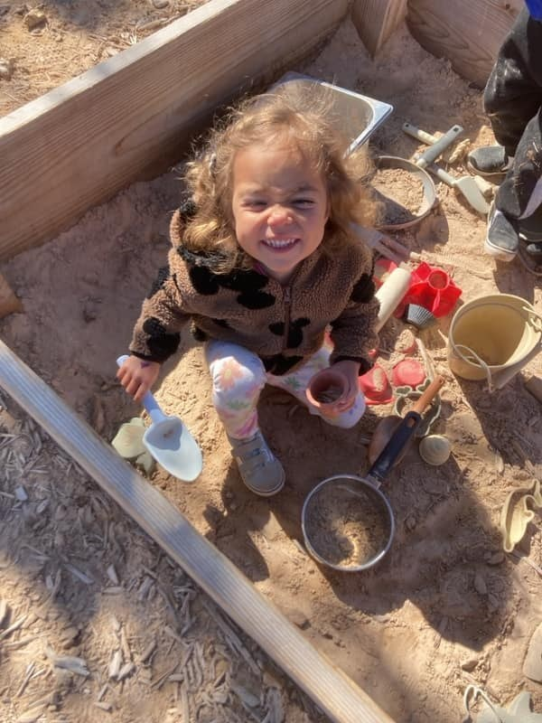
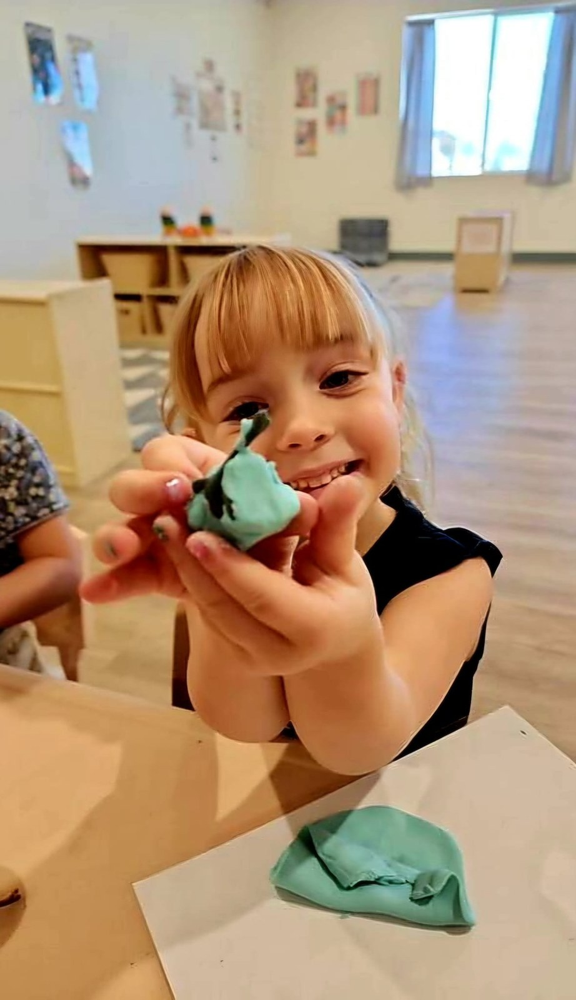
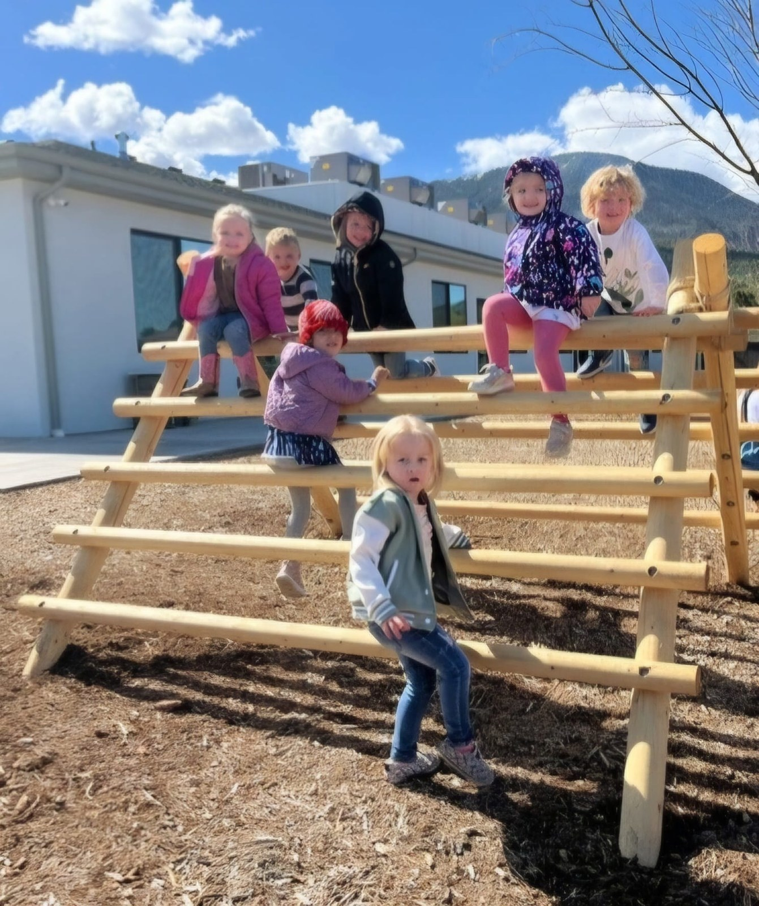
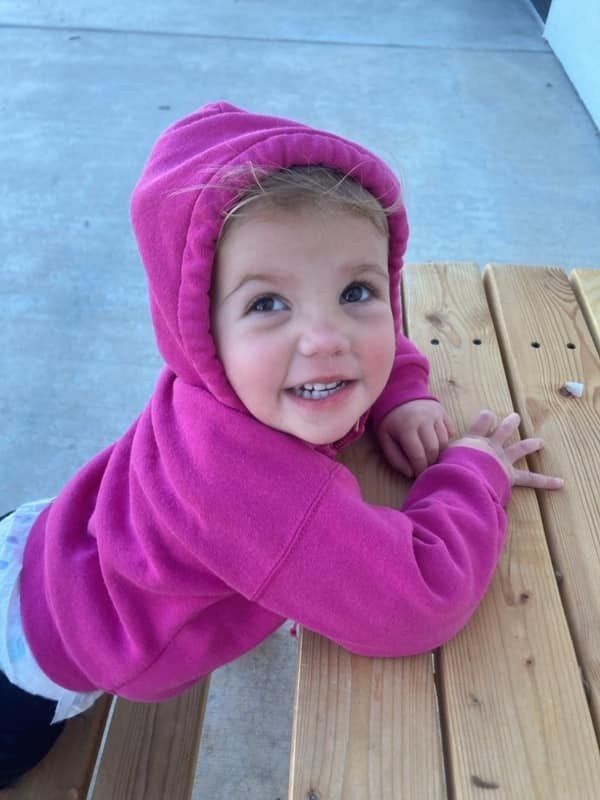

Grow something good.
Plant, water, and pick. Our garden gives little learners a hands-on connection to the things that grow.
✳ PRESCHOOL & CHILDCARE · CEDAR CITY, UT
A little sunshine. A little muddy magic. A whole lot of growing. Welcome to a place where care meets curiosity—and learning feels like play.


A HAPPY PLACE TO GROW
At Funshine, we make room for the big things in a little person's world: a new friendship, an “I did it!”, a question that leads to a whole new adventure.
Our structured, play-based program brings together thoughtful early learning, caring connections, and the magic of nature. Proudly growing with Cedar City families since 2017.
Find your little one's place ↗TWO WAYS TO FIND YOUR FUNSHINE
From the first little milestones
to the next big adventure.

YES, WE'RE A PRESCHOOL, TOO!
Kindergarten readiness starts with curiosity. Our hands-on preschool invites children to create, experiment, ask questions, and discover what they can do.
Art, science, math, music, and sensory play become meaningful little adventures—with plenty of room for each child's imagination.
Contact us for current schedules, pricing, and openings.
Squish, paint, sculpt, and explore. Child-led art and sensory discoveries make space for creativity, new words, and proud little moments.
A LITTLE HOME AWAY FROM HOME
Finding childcare is about finding people you can trust. We create a caring, engaging place where your little one can feel at home while exploring something new.

OUR FAVORITE CLASSROOM? THE GREAT OUTDOORS.
Some lessons need a little dirt. Our nature-based outdoor classroom brings learning to life through movement, make-believe, and everyday discovery.
Plant, water, and pick. Our garden gives little learners a hands-on connection to the things that grow.
Mud kitchens, water play, balance beams, and tree stumps turn the outdoors into a world of possibility.
From raising butterflies to discovering life cycles, nature gives us so many reasons to be curious.
REAL DAYS. REAL LITTLE DISCOVERIES.
A glimpse of life at Funshine, from our center's own photo collection.
A FEW GOOD QUESTIONS
Yes! We offer a preschool program with two-day, three-day, and full-week options. Preschool mornings are listed as 8:30–11:30 a.m., Monday–Friday. Call us to confirm the current options and find the right fit.
Our year-round childcare program welcomes children from 6 weeks to 6 years, with part-time and full-time options. Contact us to discuss your child's needs and current availability.
It looks like making art, building, counting, singing, trying an experiment, and asking questions. We combine a structured program with hands-on activities that build on children's strengths and interests.
Outdoor exploration is a big part of our nature-based approach. Our outdoor classroom includes a mud kitchen, balance beams, a tree stump walkabout, and a water wall, with opportunities to explore our garden and the natural world.
Give us a call at (435) 574-7111 or prepare a tour inquiry. We'll help you learn about the current preschool and childcare options. Rates and availability are confirmed directly with the center.
We'd love to show you around! Call or email to arrange a tour, see our spaces, and talk about what would work best for your family.
YOUR NEXT CHAPTER STARTS WITH HELLO
Meet the people. Explore the spaces. Picture your little one here. Let's arrange a tour and get to know your family.
Monday–Friday
7:00 a.m.–6:00 p.m.